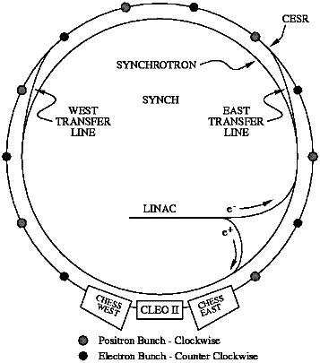

The Cornell Electron-Positron Storage Ring (CESR) is an
electron-positron collider with a circumference of 768 meters,
located 12 meters below the ground at Cornell University campus.
It is capable of producing collisions
between electrons and their anti-particles,
positrons, with
center-of-mass energies between 9 and 12 GeV. The products of these
collisions are studied with a detection apparatus,
called the CLEO detector.

For more information:
We thank CESR for permission to use their images.